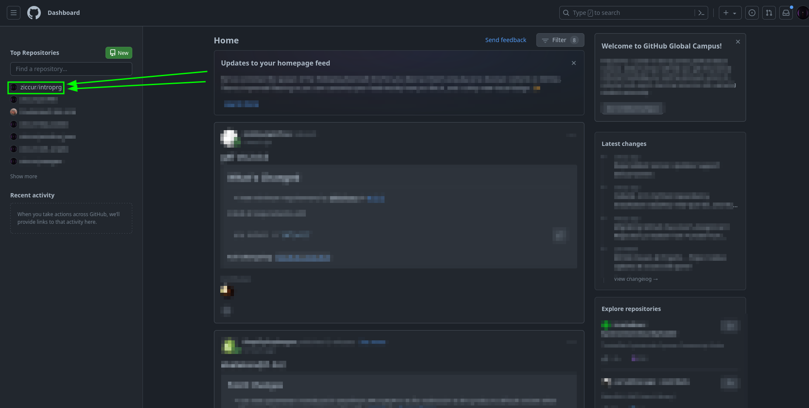
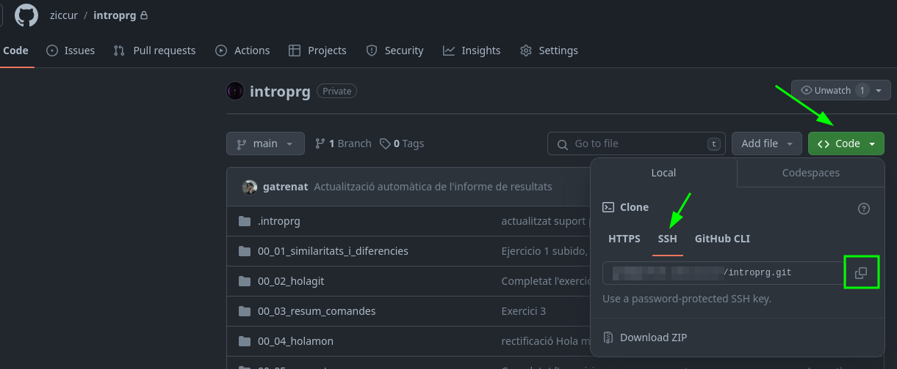

Vas bien! Ahora necesitas vincular tu repositorio de github con tu ordenador
Sigue los siguientes pasos:
- Inicia sesión en GitHub: https://github.com/
- Dirigete a tu repositorio .introprg

- Copia la clave SSH del repositorio, como en la captura de abajo. Acuerdate de desplegar el menu en el boton verde de Code

Ya lo tenemos! Pega la clave que acabas de copiar en la terminal donde has executado el script (Ctrl + Shift + V)
Si has cerrado la terminal no te preocupes, simplemente abre otra, pero tendras que poner de nuevo tu nombre y correo